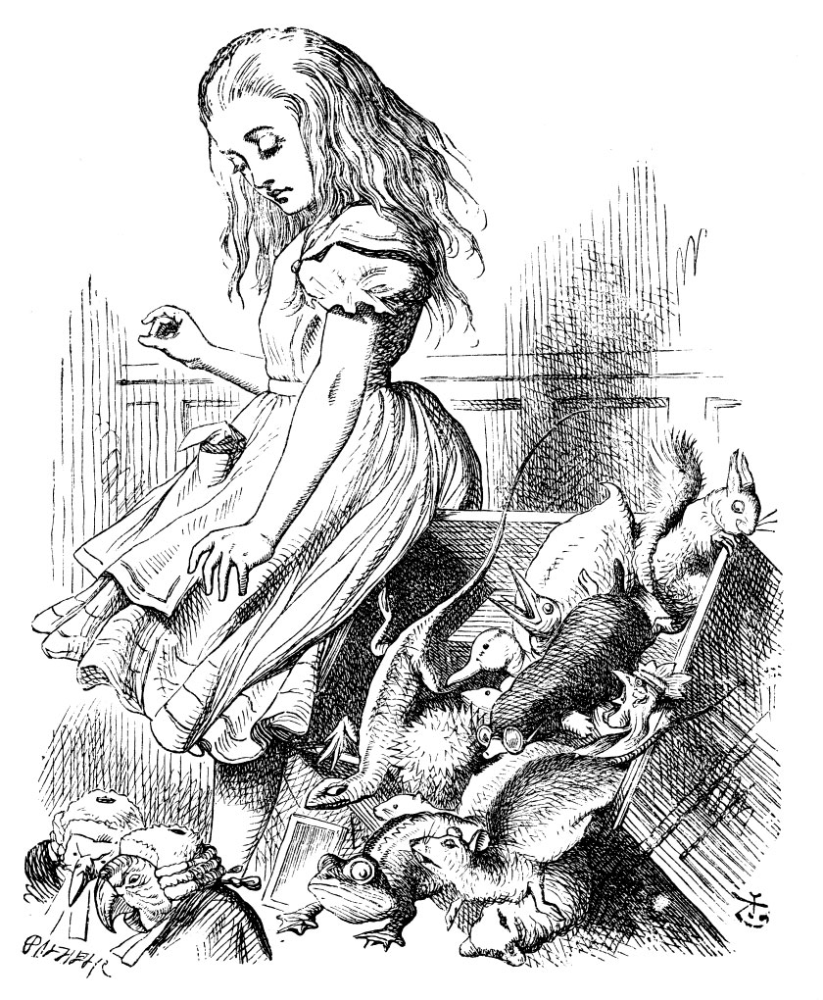
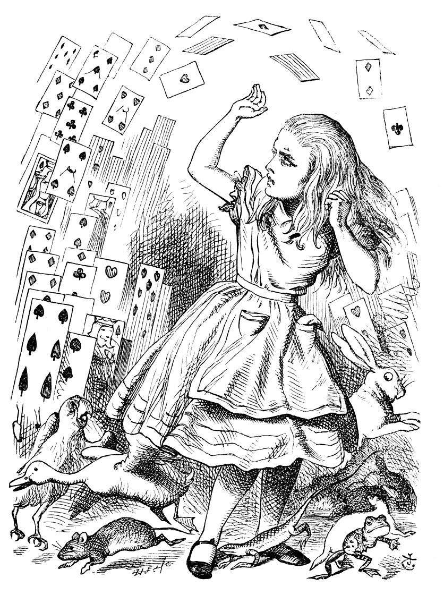

Alice, son birkaç dakikada ne kadar büyüdüğünü o anın telaşı içinde unutarak, “Burada!” diye bağırdı ve öyle bir aceleyle yerinden fırladı ki, eteğinin kenarları jüri locasına hafifçe takılınca, bütün jüri üyeleri tepe taklak aşağıdaki kalabalığın üzerine düştü, sonra da öylece sere serpe kendilerini yerde buldular; bu olay Alice’in aklına bir hafta önce kazara düşürüp kırdığı kırmızı balık fanusunu getirdi.
“Ay, çok affedersiniz!” diye haykırdı Alice dehşet içinde, olabildiğince çabuk onları alıp yerlerine koymaya başladı, balık kazası aklından hiç çıkmadığından, onları hemen toplayıp localarına geri koymasa, öleceklermiş gibi geliyordu ona.
“Bütün jüri üyeleri düzgün bir şekilde yerlerine konmadıkça, bu dava devam edemez,” dedi Kral ciddi bir şekilde. “Hepsi” diye üzerine bastıra bastıra tekrarlarken Alice’e dik dik bakıyordu.
Alice, jüri locasına bakınca o telaşla Kertenkele’yi baş aşağı koyduğunu fark etti; zavallı minik şey, herhalde zor hareket edebildiğinden olsa gerek, kuyruğunu kederli kederli sallayıp duruyordu. Onu hemen alıp yerine doğru dürüst bir şekilde oturttu; “aslında bunun çok da bir önemi yok,” dedi kendi kendine, “galiba bu mahkemede böyle otursan da olur, öyle otursan da olur.”
Jüri üyeleri, devrilmelerinin şaşkınlığından birazcık sıyrılıp, taş tahtalarıyla kalemleri ellerine tutuşturulur tutuşturulmaz var güçleriyle olayın öyküsünü yazmaya koyuldular; ne ki Kertenkele ağzı bir karış havada, gözünü mahkemenin tavanına dikip bakmaktan öte pek bir şey yapacak durumda değil gibiydi.
“Bu işle ilgili ne biliyorsun,” dedi Kral Alice’e.
“Hiçbir şey,” dedi Alice.
“Hiçbir şey mi?” diye ısrar etti Kral.
“Hiçbir şey,” dedi Alice.
“Bu önemli,” dedi Kral jüriye dönerek. Jüri üyeleri taş tahtalarına tam da bunu yazmaya başlamışlardı ki, Beyaz Tavşan araya girdi: “Tabii ki Majesteleri önemsiz demek istedi,” dedi oldukça saygılı bir ses tonuyla, ama konuştuğu sırada da kaş çatıp surat etmekten geri durmadı.

“Tabii ki önemsiz demek istedim,” dedi Kral apar topar ve kendi kendine yavaşça, “önemli... önemsiz... önemli... önemsiz...” diye tekrarlamaya başladı; sanki kulağa hangisinin hoş geldiğini anlamak ister gibiydi.
Kimi jüri üyeleri ‘önemli,’ kimi jüri üyeleri ‘önemsiz’ diye yazdı. Alice, yukarıdan taş tahtalar üzerinden görebildiğinden ne yazdıklarını fark edebiliyordu; “aman, çok da önemli değil,” diye düşündü.
Tam bu sırada bir süredir hararetle kendi not defterine bir şeyler yazıp duran Kral, “Sessizlik!” diye bağırıp, ardından da şunları okudu: “Madde 42: Boyu bir milden daha uzan olanlar mahkemeyi terk etmelidir.”
Herkes dönüp Alice’e baktı.
“Benim boyum bir mil değil ki,” dedi Alice.
“Hayır öyle,” dedi Kral.
“Boyun nerdeyse iki mil,” diye ekledi Kraliçe.
“Peki, isterse öyle olsun, gitmeyeceğim işte,” dedi Alice. “Üstelik bu, öyle bilinen bir yasa da değil: bunu şimdi siz uydurdunuz.” “Bu kitaptaki en eski yasa,” dedi Kral.
“O zaman, Madde i olmalıydı,” dedi Alice.
Kral sapsarı kesilip, telaşla defterini kapatıverdi. “Kararınızı verin,” dedi jüriye, kısık titrek bir ses tonuyla.
“Lütfen, Majesteleri daha başka deliller var,” dedi Beyaz Tavşan aceleyle fırlayarak: “İşte bu kâğıt daha yeni bulundu.”
“İçinde ne var?” dedi Kraliçe.
“Daha açmadım,” dedi Beyaz Tavşan, “fakat öyle gözüküyor ki, bu mektup tutuklunun... birilerine yazdığı bir mektup.”
“Tabii ki birilerine yazılmış olmalı,” dedi Kral, “hiç kimseye yazılmamış olması olağandışı olurdu, öyle di mi?”
“Kimin adresine?” diye sordu, jüri üyelerinden biri.
“Adres yok,” dedi Beyaz Tavşan. “Doğrusu dışında hiçbir şey yazılı değil.” Konuştuğu sırada kâğıdı açtı, “Üstelik bu bir mektup bile değil, sadece bir manzume.”
“Tutuklunun el yazısıyla mı yazılmış?” diye sordu bir başka jüri üyesi.
“Hayır,” dedi Beyaz Tavşan, “işin hayret edilecek yanı da bu ya.” (Bütün jüri üyeleri şaşkın bir yüz ifadesi takınmışlardı.)
“Başka birinin el yazısını taklit etmiş olmalı,” dedi Kral. (Bütün jüri üyelerinin yüzleri ışıl ışıl olmuştu yeniden.)
“Lütfen Majesteleri,” dedi Kupa Valesi, “bunu ben yazmadım. Benim yazdığımı da kimse ispat edemez: Altında hiçbir imza yok.”
“İmzalamadıysan,” dedi Kral, “bu daha da kötü ya. Kimi kötü niyetlerin olmalı, yoksa dürüst bir insan gibi altına imzanı atardın.”
Bunun üzerine bütün mahkemeden bir alkış koptu: KraPın o gün söylediği tek akıllıca şey buydu.”
“Bu da suçunun bir ispatıdır,” dedi Kraliçe.
“Bu hiçbir şeyi ispatlamaz,” dedi Alice. “Daha şiirin ne hakkında olduğunu bile bilmiyorsunuz!”
“Okusun,” dedi Kral.
Beyaz Tavşan gözlüklerini taktı, “Nereden başlayayım Majesteleri?” diye sordu.
“Başından başla,” dedi Kral ciddi bir şekilde, “sonuna varıncaya kadar devam et, bitince dur.”
Beyaz Tavşan’ın okuduğu dizeler de işte şunlardı:
“Dediler ki gitmişsin o hanıma
Söz etmişsin benden o beye de:
Övgüler yağdırmış hanım bana
Ama demiş yüzemez de.
Gitmediğimi haber etmiş bey onlara
(E biliyoruz, doğru bu zaten):
Ola ki hanım meseleyi zorlarsa
Ne olacak o zaman halin?
Verdim hanıma bir tane, vermiş onlar da beye İki tane
Sen de verdin bize üç belki daha fazla
O zaman döndüler sana, yüz çevirip beye
Gerçi daha önce hepsi benim olsa da.
Ben ya da hanım bir ihtimalle
Bulaşırsak şayet bu meseleye
Bey güveniyor senin onları salıvereceğine
Salıverdiğin gibi bizleri de.
Düşüncem şuydu ki, derhal
(Tutulmadan hanım bu öfke nöbetine)
Sendin dikilen o engel
Beyin, bizlerin ve onun arasına.
Bilmesin bey en çok onları sevdiğini hanımın
Öyle kalsın sonsuza dek bu giz
Olmasın sakın başkalarının
Sade şenle ben bilelim, ikimiz.
“Bu şu ana değin elde ettiğimiz en önemli kanıt,” dedi Kral ellerini ovuşturarak; “o halde şimdi jürinin...”
“Jüriden biri bunu açıklayabilirse,” dedi Alice (son birkaç dakikada öyle büyümüştü ki, Kral’ın sözünü kesmekten hiç korkmuyordu), “ona altı peni vereceğim. Bunda zerre kadar anlam olmadığına adım gibi eminim.”
Bütün jüri üyeleri taş tahtalarına şöyle yazdılar: “Kız, bunda zerre kadar anlam olduğuna inanmıyor.” Ne var ki hiçbiri de kâğıttaki rıi açıklamaya kalkışmadı.
“Bunda bir anlam yoksa,” dedi Kral, “iyi ya işte, bu bizi anlam arama zahmetinden kurtaracak. Fakat yine de bana öyle geliyor ki,” diye devam etti Kral, bu arada manzumeyi dizlerinin üzerine koyup tek gözle incelemeye başlamıştı. “Kimi anlamlar çıkarılabilir... ‘Ama demiş yüzemez de...' Sen yüzmesini bilmiyorsun, değil mi?” diye sordu Kupa Valesi’ne dönerek.
Kupa Valesi kederli kederli başını salladı, “Yüzebilecek bir halim mi var,” dedi. (Tepeden tırnağa kartondan yapıldığından öyle bir hali olmadığı kesindi.)
“Buraya kadar tamam,” dedi Kral, kendi kendine dizeler üzerinde mırıldanarak devam etti: “‘E biliyoruz, doğru bu zaten...’ Bunu tabii ki jüri söylüyor... ‘Verdim hanıma bir tane, vermiş onlar da beye iki tane...’ Bak sen, işte burası da çöreklerle ne yaptığını anlatıyor olmalı.”
“Ama şöyle de diyor: ‘O zaman döndüler sana yüz çevirip beye,”’ dedi Alice.
“Tamam, işte buradalar ya!” dedi Kral zafer kazanmışçasına masanın üstündeki çörekleri işaret ederek. “Bundan daha açık hiçbir şey olamaz. Sonra bakın... ‘Tutulmadan hanım bu öfke nöbetine...’ Sevgilim, söyle sen hiç öfke nöbetine tutuldun mu?” dedi Kraliçe’ye dönerek.
“Asla!” dedi Kraliçe hiddetle ve mürekkep hokkasını kaptığı gibi fırlatıverdi Kertenkele’ye. (Zavallı Kertenkele Bili, hiç iz bırakmadığını görünce, tek parmağıyla taş tahtasına yazı yazmayı bırakmıştı; ama o anda fırsat bu fırsat deyip tekrar yazmaya başladı, kuruyana kadar yüzünden akan mürekkebi kullandı.)
“O halde, bu öfke nöbeti bölümüyle senin ilgin yok,” derken Kral, dönüp mahkemeye gülümsedi. Ortalığa bir ölüm sessizliği çöktü.
“Bu bir şaka!” dedi Kral küsmüş gibi ve herkes gülmeye başladı. “O halde jüri kararını versin,” dedi Kral, o gün belki yirminci kez aynı şeyi söyleyerek.
“Yok, Yok!” dedi Kraliçe. “Önce mahkum edilsin, sonra hüküm verilsin.”
“Ne abuk sabuk bir şey bu,” diye bağırdı Alice. “Önce mahkum edilecekmiş!”
“Kapa çeneni!” dedi Kraliçe, öfkeden kıpkırmızı kesilerek. “Kapamayacağım, işte!” dedi Alice.
“Kafası uçurula!” diye avazı çıktığınca bağırdı Kraliçe. Hiç kimse yerinden kıpırdamadı.
“Kim takar seni?” dedi Alice (o anda tam da eski boyuna gelmişti), “Bir deste kâğıttan başka nesiniz, söyleyin.”
İşte tam o anda bu bir deste iskambil kâğıdı havalanıp, üstüne üstüne uçmaya başladı; Alice biraz korkudan biraz da öfkeden minik bir çığlık kopararak onları başından defetmeye çalıştığı sırada, bir anda baktı ki ırmağın kıyısında ablasının kucağında uzanmış yatıyordu; ablası ise rüzgardan uçuşup gelen kuru yaprakları Alice’in yüzünden eliyle usulca itiyordu.

“Alice, tatlım uyan! Ne kadar çok uyudun böyle!”
“Of, öyle tuhaf bir rüya gördüm ki,” dedi Alice ve şu okuduğunuz garip serüvenlerini aklında kaldığınca ablasına anlattı.
Bitirdiğinde ablası onu öptü ve “Gerçekten de tuhaf bir düşmüş, tatlım. Neyse, şimdi koş da çayını iç. Vakit bir hayli geçti,” dedi. Bunun üzerine Alice yerinden fırlayıp koşmaya başladı, bir yandan da elbette ne şaşılası bir düş gördüğünü düşünüyordu.
***
Ablası ise, Alice'in bıraktığı yerde elini yüzüne dayamış öylece oturup batan güneşi seyrederken, minik Alice’i ve tüm o şaşılası serüvenlerini düşünüyordu; derken o da kendince bir düşe daldı...
Önce küçük Alice’i gördü düşünde; minicik ellerini yine dizlerinde kenetlemiş, ışıl ışıl meraklı gözleriyle ona bakıyordu... her bir ayrıntılı tonlamasına varıncaya değin Alice’in sesini duyabiliyordu; sürekli uçuşarak gözlerine giren saçlarından kurtulmak için başını silkişini görebiliyordu... orada öylece hareketsiz bütün bunları dinlerken ya da dinliyor gözükürken birdenbire kı? kardeşinin düşünde gördüğü o tuhaf yaratıklar beliriverdi etrafında.
Beyaz Tavşan telaşla giderken, ayağının altındaki upuzun otlar hışırdadı... Korkak Fare biraz ötedeki gölcükten geçerken suyu şıpırdattı... Mart Tavşanı ve arkadaşlarının hiç bitmeyen yemeklerini yedikleri sırada fincanlardan çıkan çın çm sesleriyle beraber, Kraliçe’nin bahtsız konuklarını idama mahkum eden kulakları tırmalayıcı o tiz sesi geliyordu kulağına... Tabak çanak şangırtıları arasında domuz bebek, Düşes'in dizlerinde yine hapşırıyordu... Ve bir kez daha Grifon’un feryatları, Kertenkele’nin kaleminin taş tahtada çıkarttığı gıcırtılar, bastırılan kobayların zar zor nefes alışveriş sesleri ortalığı kaplıyor, zavallı Yalancı Su Kaplumbağasının uzaklardan gelen hıçkırıklarına karışıyordu.
Ablası, gözleri kapalı öylece oturuyor ve gözlerini açıp hayatın o sıkıcı gerçekliğine dönmekten başka çaresi olmadığını bile bile Harikalar Diyarında olduğuna inanmak istiyordu... Oysa biliyordu ki çimenlerin hışırdaması yalnızca rüzgardandı; gölcükteki dalga-(anmalar bir o yana bir bu yana sallanan sazlardandı; çın çın fincan sesleri koyunların zillerinden çıkan şıngırtı sesiydi... Krali-çe’nin tiz çığlıkları çoban çocuğun sesiydi aslında... bebeğin hapşırması, Grifon'un feryadı ve tüm diğer tuhaf sesler (biliyordu ki) faal bir çiftliğin gürültü patırtısından ibaretti... ve Yalancı Su Kap-lumbağası’nın hıçkırıklarının yerini inek böğürtüleri alacaktı.
Ve nihayet, küçük kardeşinin büyüyüp ilerde kendisi gibi yetişkin bir kadın olacağını getirdi gözünün önüne. Olgunluk çağlarında bile, çocukluğundaki o saf ve sevgi dolu kalbini koruyacağını; etrafına başka küçükleri toplayıp onlara pek çok tuhaf öykü, hattâ belki yıllar öncesinin Harikalar Diyarı düşünü anlatıp, çocukların gözlerini parlatarak meraklı bakışlarla dolduracağını; kendi küçüklüğünü ve mutlu yaz günlerini hatırlayarak, o çocukların saf dertleriyle dertlenip, saf sevinçleriyle sevineceğini düşündü.